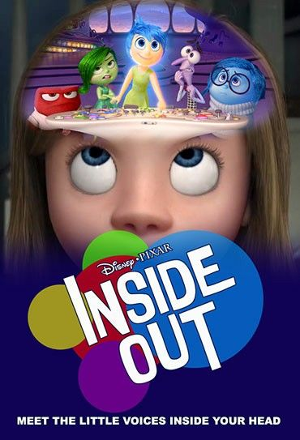

Inside Out is a very interesting experience. Bringing so many advanced concepts to cinema, such as personality traits, base emotions and the struggles of dealing with pre-teen life, is a big and ambitious idea, but one that has, thankfully, paid off. Pixar gave the adults an enjoyable movie, that tells a story that many of us have already gone through, making us reminisce of our old days, and gave the kids easier ways to convey their feelings, through the characters of Joy, Anger, Fear, Disgust and Sadness. It's a truly unforgettable experience.
Pixel's is a throwback to the 80's in a way that most movies aren't. It knows it's premise is goofy and relies heavily on nostalgia to keep things interesting, and it doesn't try to stray from that, preferring to crack dad jokes now and then between action shots, which could be fun if what you're searching for is relieving the good old days of arcades and Pac-Man, but, if you're searching for an intricate story, that will leave you asking what life's real meaning is, this won't satisfy you. It's a family movie, made for movie nights, and especially, made for the grown-ups. As always, the presence of Adam Sandler and Kevin James really sells the humor on this movie.

Encanto shows it's viewer that maybe some things we believe aren't true, and it's proud to send that message during all of it's 102 minutes of runtime. Mirabel isn't a failure just because she's different from the rest of her family, Abuela isn't right just because she's older, and her actions aren't forgiven only because she's family. The ending shows people that standing up to yourself is a good thing and that change is important in life. Stephanie Beatriz's role as Mirabel gave the movie a shine that only made the experience even more enjoyable.